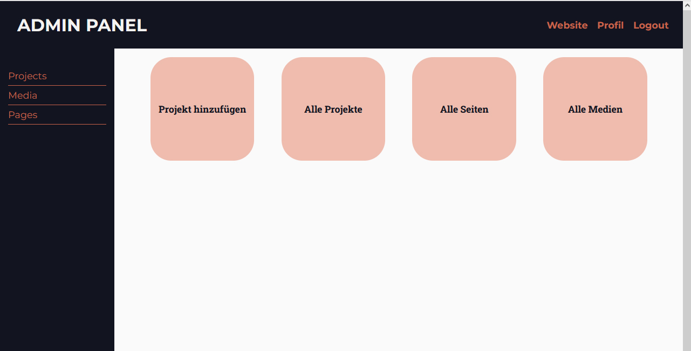
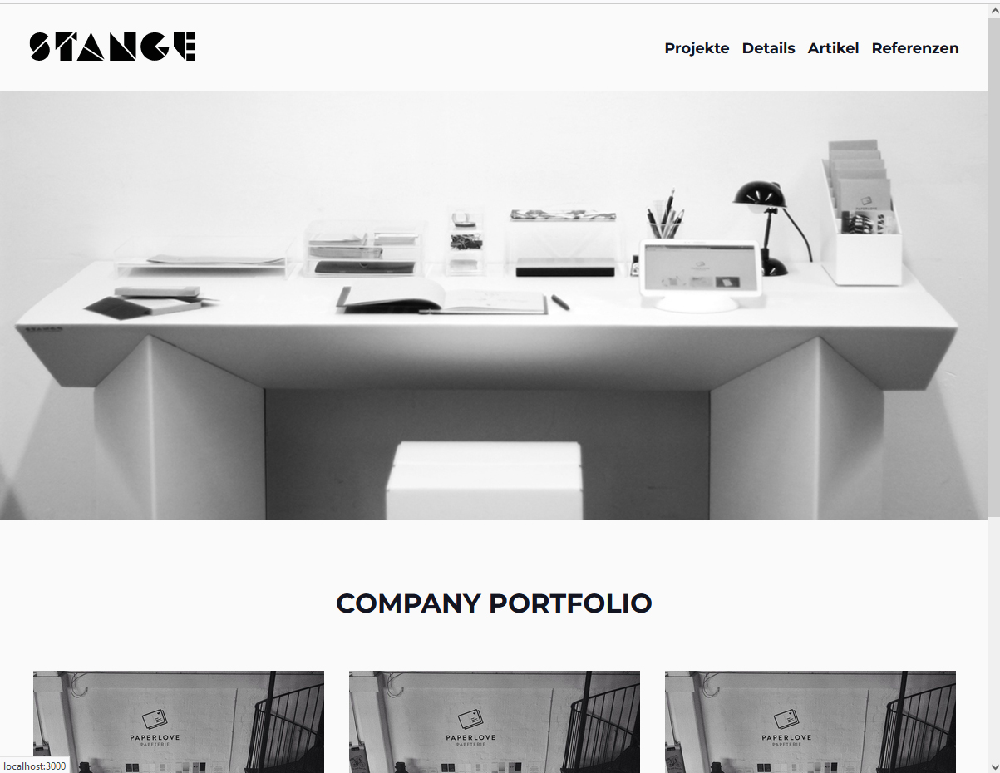
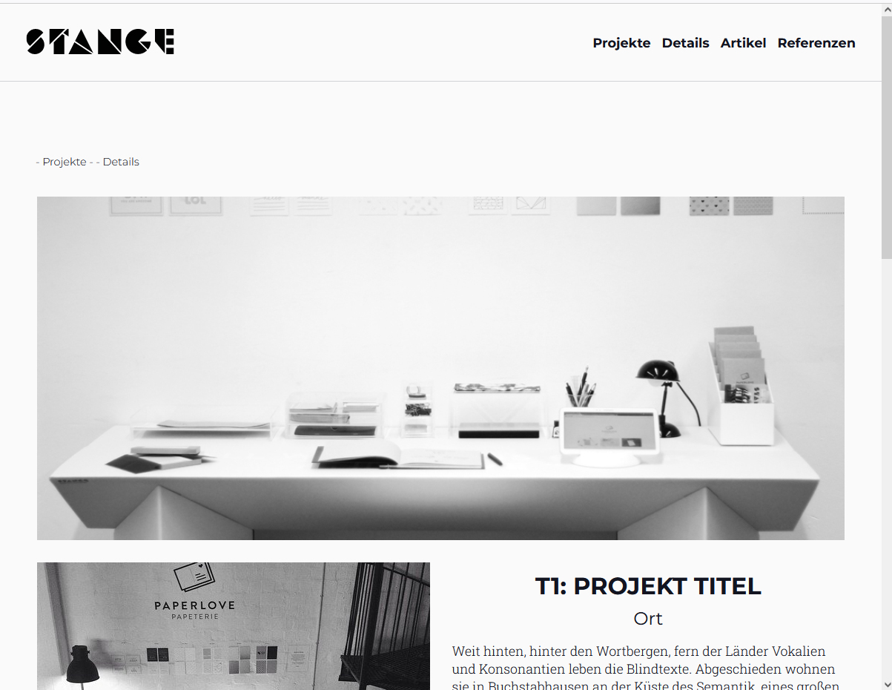
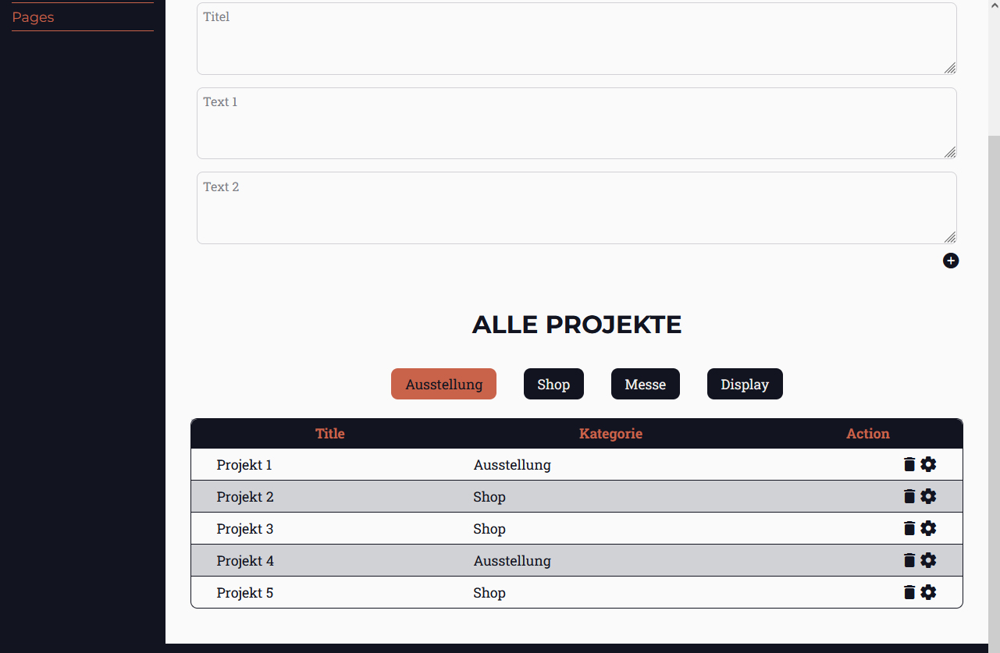
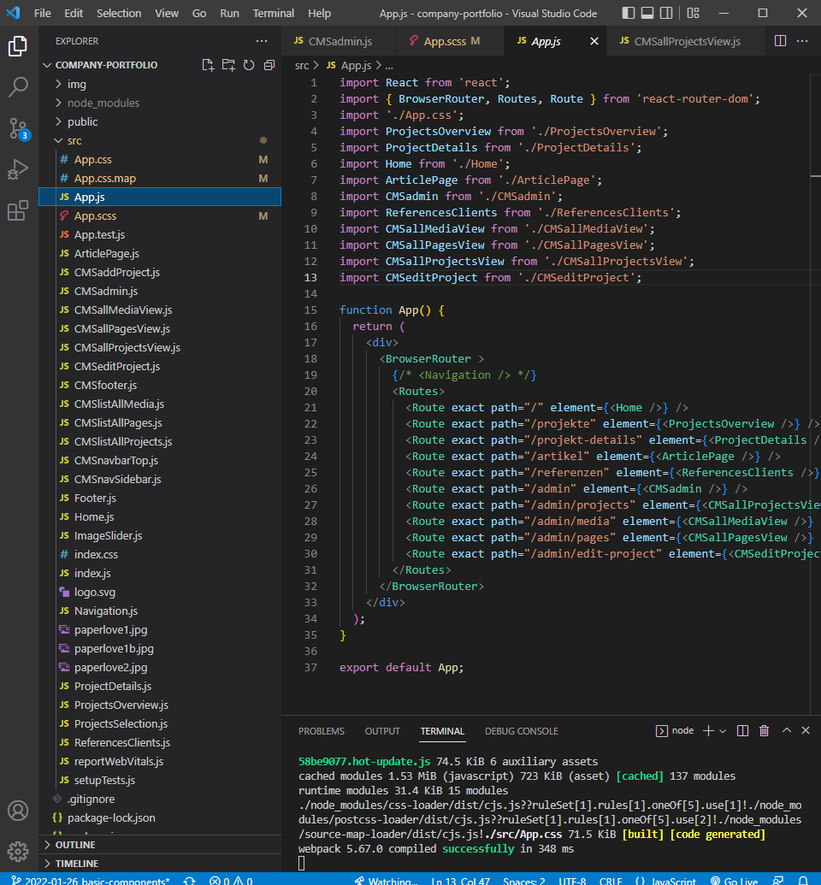
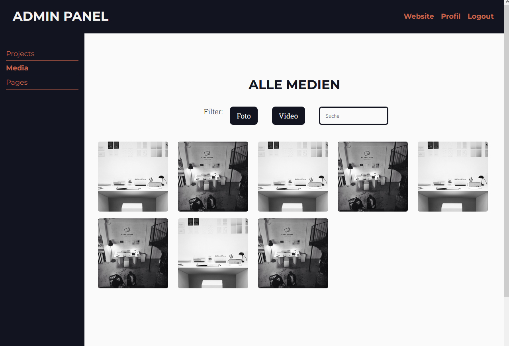
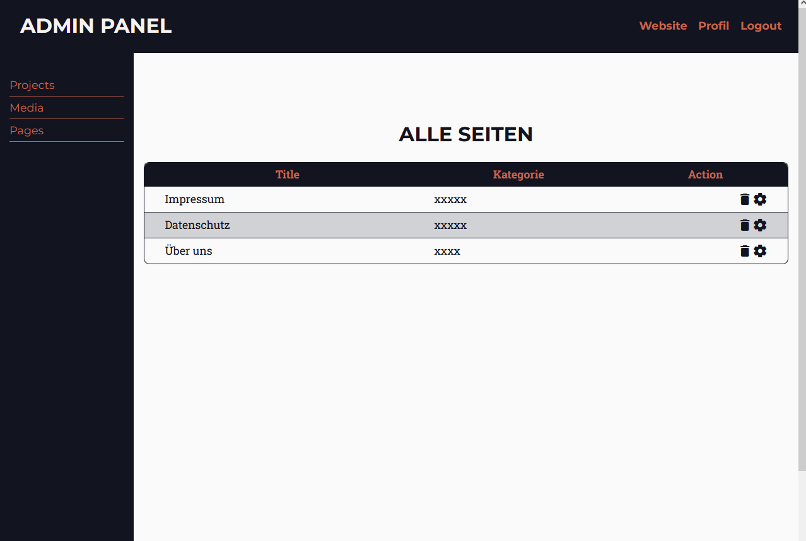
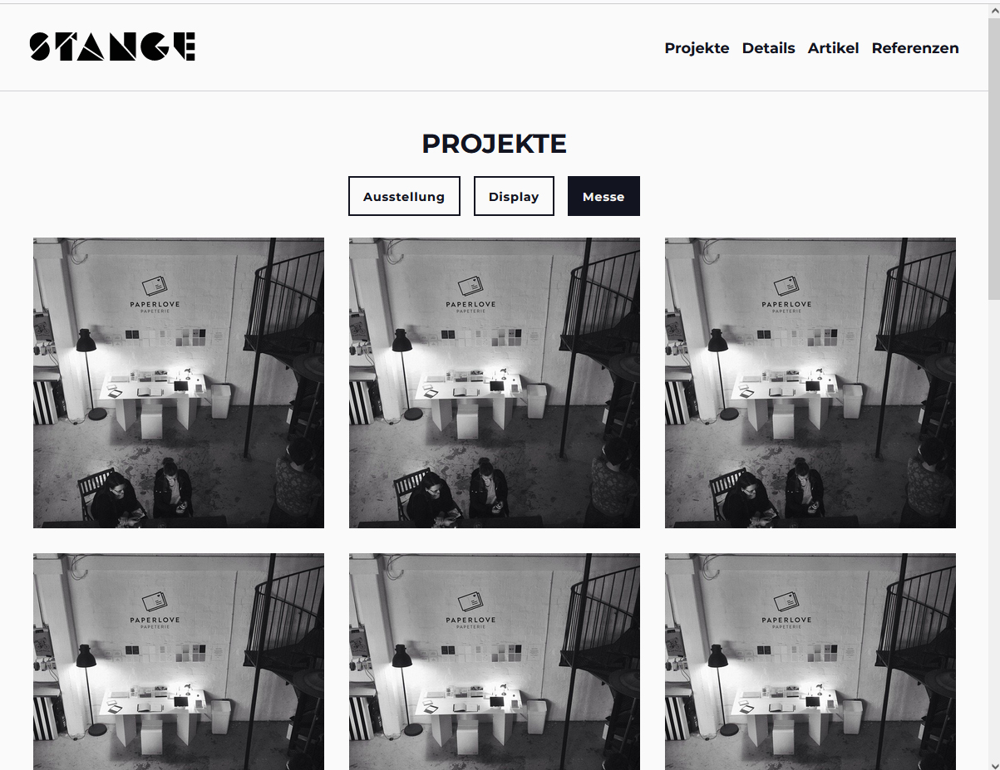
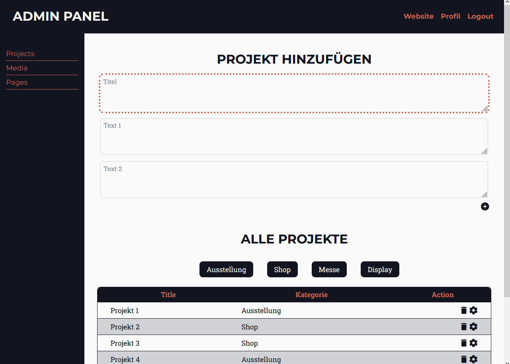
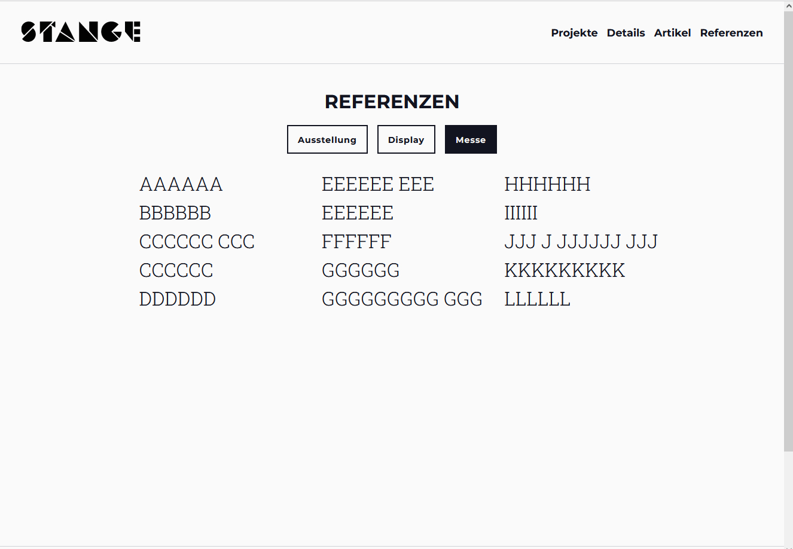

Portfolio CMS (React)
Case Study
Über das Projekt
Portfolio CMS ist eine Web-App zur Erstellung von Websites.
Es handelt sich um ein Content-Management-System: Benutzer
können Seiten für Projekte erstellen, diese Projekte aktualisieren und Bilder hochladen.

Admin dashboard
Ziel
Ziel des Projekts war es, eine Webanwendung auf Basis von Full-Stack-JavaScript-Technologien zu entwickeln,
um sie in meinem Portfolio zu präsentieren.
Die Herausforderung bestand darin, sowohl das Frontend als auch den Administrationsbereich von Grund auf
neu zu erstellen. Ich wollte verstehen: Wie und wo kann ich Texte und Bilder hinzufügen, und wie rufe ich
die Daten ab und stelle sie dar?

Startseite
Kontext
Die Anwendung entstand im Rahmen meiner Bemühungen, meine Fähigkeiten in React, der
Datenbankanbindung und der UI-Implementierung zu erweitern.
Da ich beruflich bereits mit Content-Management-Systemen arbeite, war mir das Konzept
vertraut, und ich war neugierig darauf, wie ein solches System aufgebaut ist.

Projekt Detail Seite
Lösungsansatz
Um eine App zu entwickeln, die es Website-Erstellern ermöglicht, Informationen hinzuzufügen, waren sowohl eine Serverseite zur Speicherung aller Daten als auch eine Clientseite mit der Benutzeroberfläche erforderlich, die es dem Nutzer ermöglicht, mit all diesen Informationen zu interagieren.

Liste aller Projekte
1. Schritt: Erstellung der Client-Seite
Im ersten Schritt der App-Entwicklung habe ich die Komponenten mit React erstellt.
Die Hauptansichtskomponente enthielt das Routing der App.
Die Hauptansicht zeigt ein Dashboard mit verlinkten Elementen zu den Bereichen des CMS sowie zu den Aktionen,
die der Benutzer ausführen kann.
2. Schritt: Verbindung zur Datenbank herstellen
Der zweite Schritt besteht darin, eine Datenbank zu erstellen. Dafür werde ich erneut Firebase verwenden, da es über integrierte Dienste verfügt, die Zeit sparen und es mir ermöglichen, mich stärker auf das Frontend zu konzentrieren.

App.js mit Komponenten

Alle Medien

Alle Seiten

Projekt Übersicht

Projekt Details

Referenzen
Reflektion
Es war eine Herausforderung, die allgemeine Struktur von React sowie die Verwendung von Props und State zu verstehen – also wie die Dinge miteinander verknüpft sind, wie Daten zwischen Komponenten weitergegeben werden und wie man in der Datenbank darauf zugreifen kann, um sie in den Funktionen zu nutzen.
Zeitlicher Umfang und nächste Schritte
Für beide Teile der Anwendung zusammen – die Serverseite und die Clientseite – habe ich etwa zwei Monate benötigt.